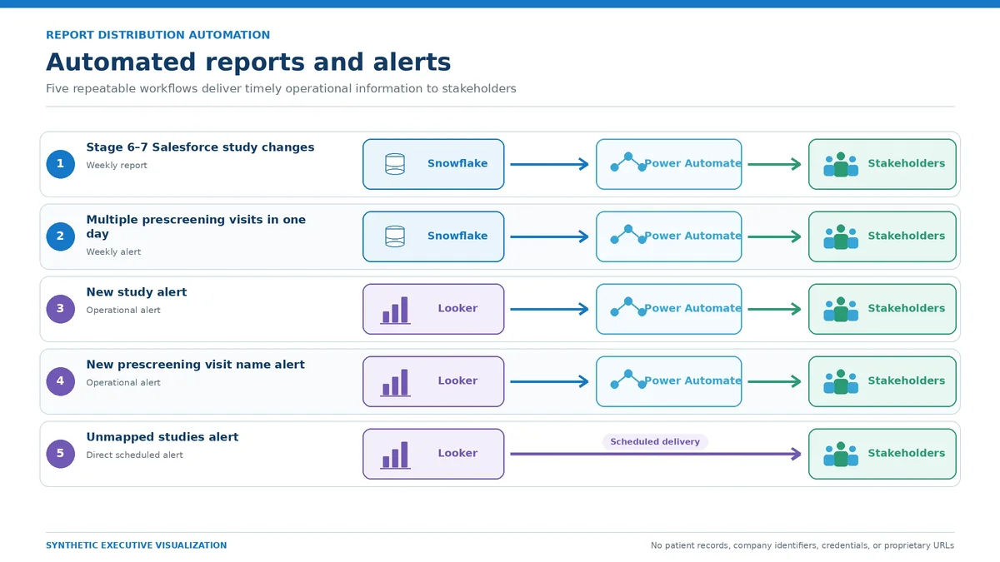

Day job · Snowflake tasks, Looker, Power Automate
Report and alert automation
Five recurring reports and exception alerts that used to be assembled by hand. Together they saved more than 100 hours of manual work.

The question
Daily, weekly and monthly reports were being pulled, cleaned and forwarded by hand, and some data-quality exceptions were only noticed when someone happened to look.
What I did
I automated five of them. Each starts with a scheduled Snowflake task or Looker schedule, checks for a business or data-quality condition, and sends a short report or alert to the people who act on it. Power Automate, Office Scripts and Excel handle file attachments and distribution where Snowflake or Looker can’t do it alone. That removed more than 100 hours of manual effort.